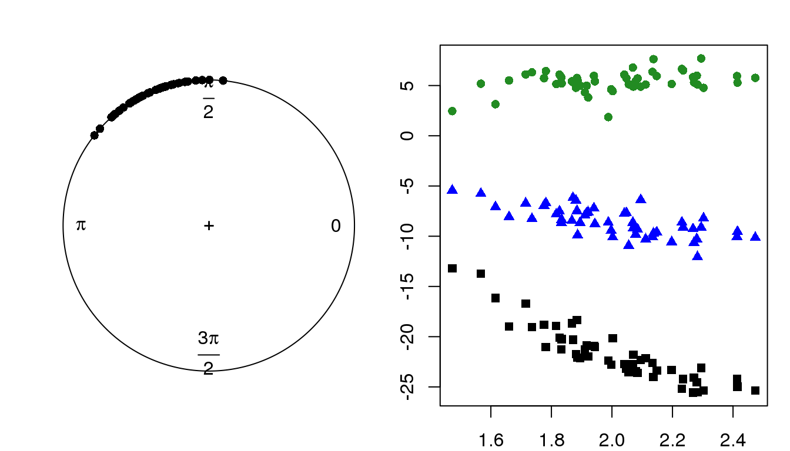
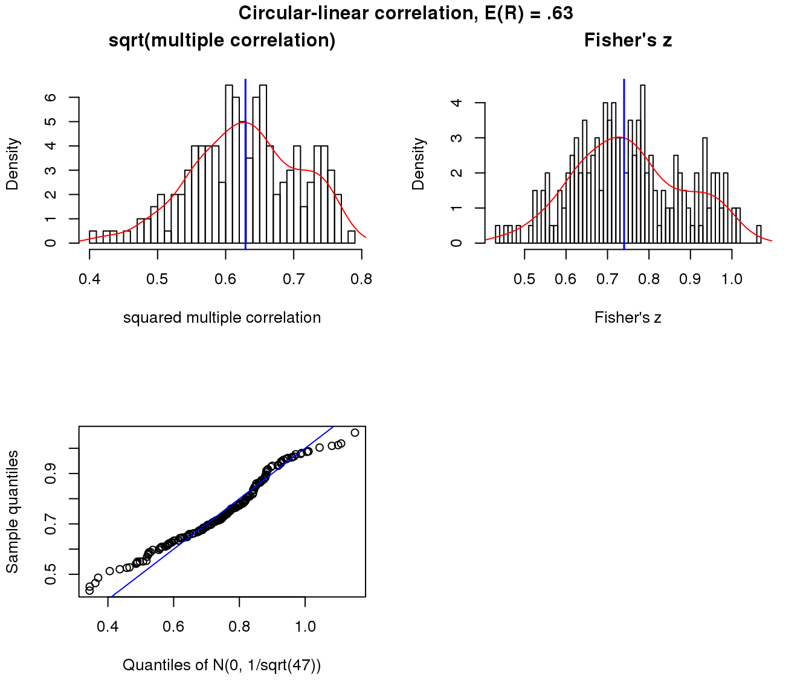
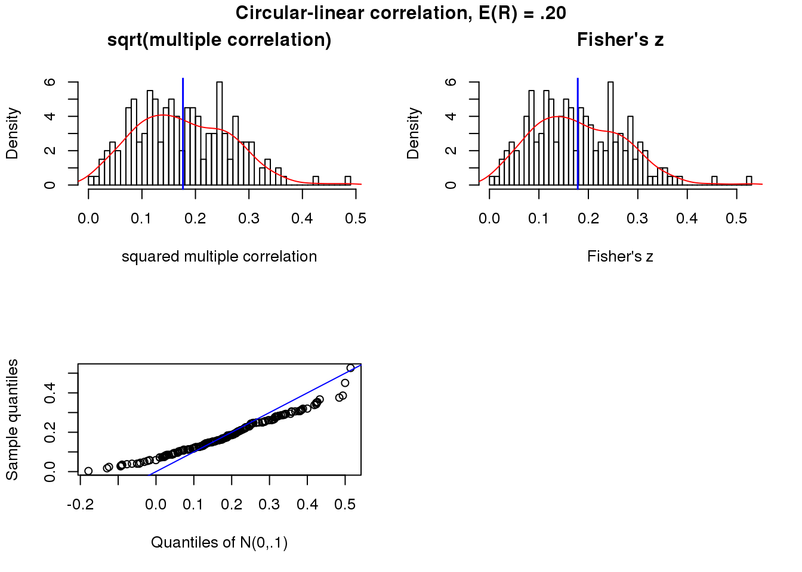
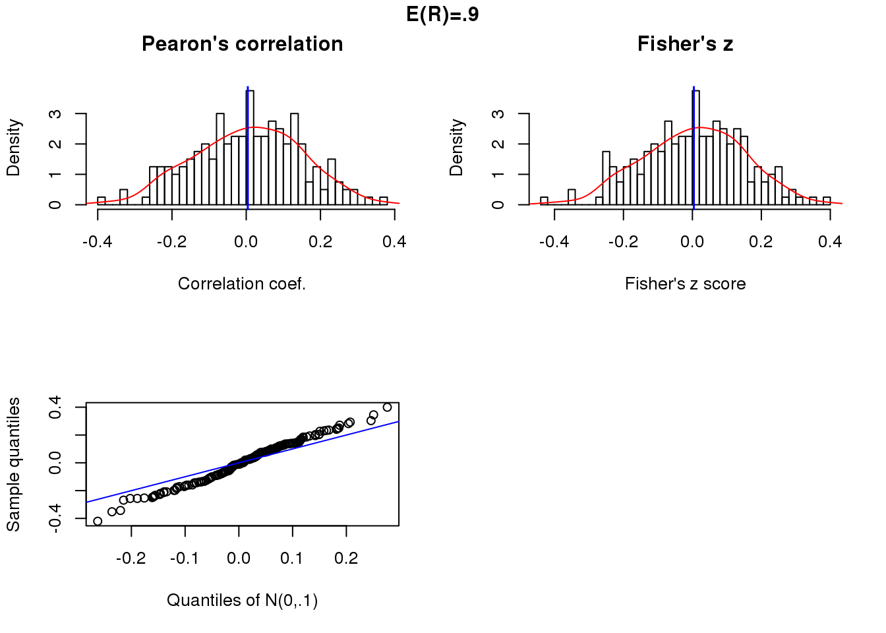
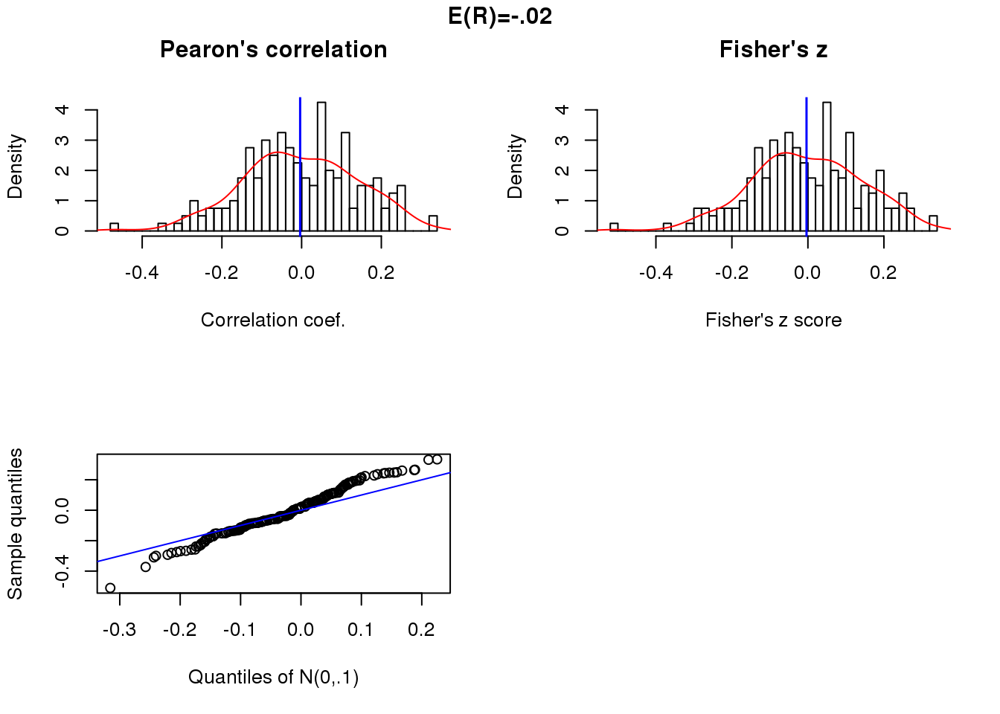
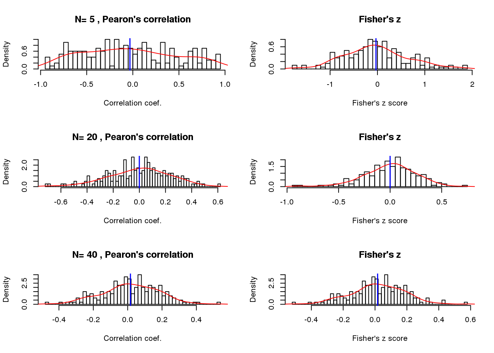
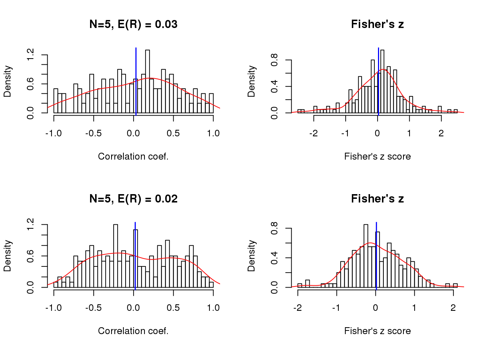

Last updated: 2018-03-13
Code version: adbc970
Circular-circular correlation picks up more interesting patterns than circular-linear correlation. In circiular-linear correlation, the linear variable is implied to follow a sinusoidal pattern. This assumption is quite limited, and may explain why many of the genes detected significant in circ-linear case are not signficant in cir-cir case.
Although circular-circular correlation detects interesting patterns, the definition of this particular definition of circular-circular correlation (there are other ones) results in a measure that is phase-sensitive. For example, when the phase shift is pi/2, the two variables have a correlation of zero.
Following these results, I consider the application of nonparametric regression for circular data.
Let \(X\) be a linear random variable, and \(\Theta\) be a circular random variables. We observe data \((x_1, \theta_1), \dots, (x_n, \theta_n)\) on \((X, \Theta)\). In our case, \(n\) denotes cells, \(x_i\) denotes log2 gene expression (CPM) of a selected gene, and \(theta_i\) denotes the angle of cell \(i\) on the unit circle formed by GFP and RFP.
\(\Theta\) measures directions in 2-dimensions and can be represented as unit vectors \(\boldsymbol{u}\) in the plane, i.e., as points on the sphere \(S^{p-1} = \{ \boldsymbol{u}: \boldsymbol{u}^T \boldsymbol{u} = 1 \}\), the (p-1)-dimensional sphere with unit radius and centre at the origin, where \(p=2\). \(\boldsymbol{u}\) is thus defined by
\[ \boldsymbol{u} = (cos\,\Theta, sin\,\Theta)^T \] This definition of \(\Theta\) is also known as the embedding approach, where the sphere \(S^{p-1}\) is regarded as a subset of \(\mathbb{R}^p\).
We consider a correlation coefficient based on the embedding approach. This approach was independently introduced by Mardia (1979) and Johnson and Wehrly (1977). The measure of dependence between \(X\) and \(\boldsymbol{u} = (cos \,\theta, sin\,\theta)^T\) is the sample multiple correlation coefficient \(R_{x\theta}\) of \(X\) and \(u\), i.e., the maximum sample correlation between \(X\) and linear functions of \(\boldsymbol{u}\). The sample multiple correlation coefficient is given by:
\[ R^2_{x\theta} = \frac{r^2_{xc} + r^2_{xs} - 2r_{xc}r_{xs}r_{cs}}{1-r^2_{cs}} \] where \(r_{xc} = corr(x, cos\,\theta)\), \(r_{xs} = corr(x, sin\,\theta)\), \(\r_{cs} = corr(cos \,\theta, sin \,\theta)\) are the sample correlation coefficients. If \(X\) and \(\Theta\) are indepenent and \(X\) is normally distributed then under the null hypothesis of zero population multiple correlation coefficient,
\[ \frac{(n-3)R^2_{x\theta}}{1-R^2_{x\theta}} \sim F_{2,n-3} \]
\(R^2_{x\theta}\) ranges between zero and one, the greater its value the stronger the association between \(X\) and \(\Theta\). \(R^2_{x\theta}\) is invariant under a change of scale and origin of \(X\) as well as under a change of zero or sense of direction for \(\Theta\).
Reference:
Mardia and Jupp (2000). “Correlation and Regression”. Directional Statistics. West Sussex, England: John Wiley & Sons Ltd.
Mardia, Kent, and Bibby. (1979). Multivariate analysis. Academic Press, London.
The sample multiple correlation for ciruclar-linear association is a function of the sample pearson’s correlation between cos(theta) and sin(theta), correlation between data vector and cos(theta), and correlation between data vector and sin(theta). So when \(r_{cs}\) is small, \(R^2_{x\tehta}\) is large when either \(r^2_{xc}\) or \(r^2_{xs}\) is large. When \(r_{cs}\) is large, \(R^2_{x\theta}\) approaches zero.
library(circular)
library(Rfast)
set.seed(7)
theta <- rvonmises(50, pi, 100, rads = TRUE)
cor(cos(theta), sin(theta))[1] -0.3499888x <- 20*rnorm(50, 3*pi/4, 1/10)
cor(x, cos(theta))^2; cor(x, sin(theta))^2[1] 0.0004284577[1] 0.006214955sqrt(circlin.cor(theta, x)) R-squared p-value
[1,] 0.07917757 0.863013Get a sense of parameters needed for simulations.
set.seed(7)
theta <- rvonmises(50, 2, 20, rads = TRUE)
tau <- runif(300, -25, 5)
set.seed(7)
x <- t(sapply(1:length(tau), function(i) {
tau[i]*cos(theta-15) + rnorm(50) }))
r.squared <- apply(x, 1, function(x) circlin.cor(theta, x)[1])
summary(r.squared) Min. 1st Qu. Median Mean 3rd Qu. Max.
0.0002146 0.1658601 0.5318962 0.4722308 0.7447599 0.9067895 which.max(r.squared)[1] 115tau[75][1] -24.71072which(r.squared < .4 & r.squared > .3) [1] 1 11 21 34 44 57 67 68 84 136 167 194 208 284 285tau[19][1] -8.031457which.min(r.squared)[1] 13tau[46][1] -0.1493445# strong r.squared
set.seed(7)
theta <- rvonmises(50, 2, 20, rads = TRUE)
set.seed(7)
x.1 <- (-24.7)*cos(theta-15) + rnorm(50)
cors.1 <- circlin.cor(theta, x.1)
cors.1 R-squared p-value
[1,] 0.8799178 8.42342e-29set.seed(19)
x.2 <- (-9.8)*cos(theta-15) + rnorm(50)
cors.2 <- circlin.cor(theta, x.2)
cors.2 R-squared p-value
[1,] 0.5189844 1.837546e-12set.seed(17)
x.3 <- 6*cos(theta-15) + rnorm(50)
cors.3 <- circlin.cor(theta, x.3)
cors.3 R-squared p-value
[1,] 0.1344775 0.00173116library(circular)
par(mfrow=c(1,2), mar = c(2,2,2,1))
plot(circular(theta))
lims <- range(c(x.1,x.2,x.3))
plot(x=theta, y = x.1, pch = 15, col = "black", ylim = lims,
ylab = "X, linear variable values",
xlab = "Theta, VM(2,20)")
points(x=theta, y = x.2, pch = 17, col = "blue")
points(x=theta, y = x.3, pch = 16, col = "forestgreen")
Moderate association
x.cl <- sweep(matrix(rnorm(50*200), ncol=50), 2,
STATS = (-8)*cos(theta-15), "+")
r.squared.cl <- apply(x.cl, 1, function(x) circlin.cor(theta, x)[1])
par(mfrow=c(2,2))
hist(sqrt(r.squared.cl), nclass = 50, prob = TRUE,
main = "sqrt(multiple correlation)",
xlab = "squared multiple correlation")
lines(density(sqrt(r.squared.cl)), col = "red")
abline(v=mean(sqrt(r.squared.cl)), col = "blue", lwd=1.5)
trans.cl <- 0.5* log ((1+ sqrt(r.squared.cl))/(1- sqrt(r.squared.cl)))
trans.cl.mean <- 0.5* log ((1+ mean(sqrt(r.squared.cl)))/(1- mean(sqrt(r.squared.cl))))
hist(trans.cl, nclass=50, prob = TRUE,
main = "Fisher's z", xlab = "Fisher's z")
lines(density(trans.cl), col = "red")
abline(v=trans.cl.mean, col="blue", lwd=1.5)
qqplot(rnorm(length(trans.cl), trans.cl.mean, 1/sqrt(50-3)), trans.cl,
xlab = "Quantiles of N(0, 1/sqrt(47))",
ylab = "Sample quantiles")
abline(0,1, col = "blue")
title("Circular-linear correlation, E(R) = .63", outer = TRUE, line = -1)
Weak association
x.cl.null <- sweep(matrix(rnorm(50*200), ncol=50), 2,
STATS = (-.15)*cos(theta-15), "+")
r.squared.cl.null <- apply(x.cl.null, 1, function(x) circlin.cor(theta, x)[1])
summary(sqrt(r.squared.cl.null)) Min. 1st Qu. Median Mean 3rd Qu. Max.
0.003026 0.111656 0.167794 0.176677 0.242834 0.482664 par(mfrow=c(2,2))
hist(sqrt(r.squared.cl.null), nclass = 50, prob = TRUE,
main = "sqrt(multiple correlation)",
xlab = "squared multiple correlation")
lines(density(sqrt(r.squared.cl.null)), col = "red")
abline(v=mean(sqrt(r.squared.cl.null)), col = "blue", lwd=1.5)
trans.cl.null <- 0.5* log ((1+ sqrt(r.squared.cl.null))/(1- sqrt(r.squared.cl.null)))
trans.cl.null.mean <- 0.5* log ((1+ mean(sqrt(r.squared.cl.null)))/(1- mean(sqrt(r.squared.cl.null))))
hist(trans.cl.null, nclass=50, prob = TRUE,
main = "Fisher's z", xlab = "Fisher's z")
lines(density(trans.cl.null), col = "red")
abline(v=trans.cl.null.mean, col="blue", lwd=1.5)
qqplot(rnorm(length(trans.cl.null), trans.cl.null.mean, 1/sqrt(50-3)), trans.cl.null,
xlab = "Quantiles of N(0,.1)",
ylab = "Sample quantiles")
abline(0,1, col = "blue")
title("Circular-linear correlation, E(R) = .20", outer = TRUE, line = -1)
This section is largely taken from Jammalamadaka and SenGupta (2001). Circular Correlation and Regression Section 2. Topics in Circular Statistics. Covent Garden, London: World Scientific Publishing Co. Pe. Ltd.
Let \(\Phi\) and \(\Theta\) be a pair of circular random variables with values between 0 to \(2\pi\). We observe data \((\phi_1, \theta_1), \dots, (\phi_n, \theta_n)\) on \((\Phi, \Theta)\). I define \(\phi_i\) as the normalized log2CPM between 0 to 2pi (value scaled by maximum value across the data and the multipled by 2pi) for cell \(i\). Denote the means of \(\Phi\) and \(\Theta\) as \(\mu\) and \(\tau\), respectively.
Recall that the pearson’s moment correlation coeffcient of variables X and Y is defined by
\[ \rho(X,Y) = Cov(X,Y)/\sqrt{Var(X)Var(Y)} \] This measure has the properties
Furthermore, \(\rho(X,Y)=0\) if X and Y are independent although the converse is not true in general and if \(\rho(X,Y)=+/-1\), then \(X=aY+b\) with probability 1.
In the case with circular variables \(\Phi\) and \(\Theta\), Jammalamadaka and Sarma (1988) define a measure of circular correlation coefficient as
\[ \rho_c(\phi, \theta) = \frac{E \big[ sin(\rho-\mu)sin(\theta-\tau)\big]}{\sqrt{Var(sin(\rho-\mu))Var(\theta-\tau)}} \]
sin(-) and sin(-) are taken to represent the deviation of \(\rho\) and \(\theta\) from their respective mean directions.
To compute \(\rho_c(\phi, \theta)\), notice that
\(E(sin(\rho-\mu))=E(sin(\theta-\tau))=0\), which is analogous to the fact that the first central moment in linear case is 0.
\(E(cos(\phi-\mu))\) is a measure of concentration of \(\phi\) around the mean \(\mu\)
The circular correlation \(\rho_c\) satisfies the following properties:
\(\phi_c(\phi, \theta)\) does not depend on the zero direction used for either variable
\(\phi_c(\phi, \theta) = \rho_c(\theta, \phi)\)
$ | _c(, ) |<1$
\(\phi_c(\phi, \theta)=0\) if \(\rho\) and \(\theta\) are independent although the converse need not be true.
If \(\rho\) and \(\theta\) have full support, \(\phi_c(\rho, \theta)=1\) iff \(\rho=\theta+constant (mod 2\pi)\) and \(\phi_c(\phi, \theta) = -1\) iff \(\rho+\theta=constant(mod 2\pi\).
\(\phi_c(\phi, \theta) \approx \rho_c(\theta, \phi)\), if \(\rho\) and \(\theta\) are concentrated in a small neighborhood of their respective mean directions and are measured in radians.
The sample correlatoin coefficient of \(\Phi\) and \(\Theta\) is given by
\[ r_{c,n} = \frac{\sum^n_{i=1}sin(\rho_i-\bar{\rho})sin(\theta_i-\bar{\theta})}{\sqrt{\sum^n_{i=1}sin^2(\rho_i-\bar{\rho})sin^2(\theta_i-\bar{\theta})}} \] where \(\bar{\rho}\) and \(\bar{\theta}\) are the sample mean directions.
set.seed(7)
theta <- rvonmises(50, pi, 100, rads = TRUE)
rho <- 2*theta
cor(sin(theta), sin(rho))[1] -0.999963These simulations are mainly exercise to help getting an intuition of how Fisher’s z transformation works. In general,
The standard devaition of the transformed score is defined as \(1/\sqrt{N-3}\). This is derived following variance stablizing transformation of Fisher’s z score.
Fisher’s z trnasformation maps from [-1, 1] to (-infinity, + infinity). For small n, the correlations tend to center away from zero and have a skewed distribution. The Fisher’s z transformation results in ligher tails in the distribution and preservs values around zero, thereby creating a bell shape distribution. On the other hand, for large n, the correlation tends to center around zero and follow a symmetric and bell-shaped distribution, hence the distribution is similar before/after the Fisher’s z transformation.
Position correlation and sample size 50.
x.linear <- sweep(matrix(rnorm(200*50), ncol=50), 2,
STAT=5*cos(theta-pi), "+")
cor.linear <- apply(x.linear, 1, function(x) cor(theta, x)[1])
summary(cor.linear) Min. 1st Qu. Median Mean 3rd Qu. Max.
-0.397293 -0.090176 0.010182 0.004271 0.110744 0.379811 par(mfrow=c(2,2))
hist(cor.linear, nclass = 50, prob = TRUE,
main = "Pearon's correlation", xlab = "Correlation coef.")
lines(density(cor.linear), col = "red")
abline(v=mean(cor.linear), col = "blue", lwd=1.5)
trans.linear <- 0.5* log ((1+ cor.linear)/(1- cor.linear))
trans.linear.mean <- 0.5* log ((1+ mean(cor.linear))/(1- mean(cor.linear)))
hist(trans.linear, nclass=50, prob = TRUE,
main = "Fisher's z", xlab = "Fisher's z score")
lines(density(trans.linear), col = "red")
abline(v=trans.linear.mean, col="blue", lwd=1.5)
qqplot(rnorm(length(trans.linear), trans.linear.mean, .1),
trans.linear,
xlab = "Quantiles of N(0,.1)",
ylab = "Sample quantiles")
abline(0,1, col = "blue")
title("E(R)=.9", outer = TRUE, line = -1)
Null correlation and sample size 50.
x.linear.null <- matrix(rnorm(200*50),ncol=50)
cor.linear.null <- apply(x.linear.null, 1, function(x) cor(theta, x)[1])
summary(cor.linear.null) Min. 1st Qu. Median Mean 3rd Qu. Max.
-0.47044 -0.09885 -0.00709 -0.00368 0.10062 0.32247 par(mfrow=c(2,2))
hist(cor.linear.null, nclass = 50, prob = TRUE,
main = "Pearon's correlation", xlab = "Correlation coef.")
lines(density(cor.linear.null), col = "red")
abline(v=mean(cor.linear.null), col = "blue", lwd=1.5)
trans.linear.null <- 0.5* log ((1+ cor.linear.null)/(1- cor.linear.null))
trans.linear.null.mean <- 0.5* log ((1+ mean(cor.linear.null))/(1- mean(cor.linear.null)))
hist(trans.linear.null, nclass=50, prob = TRUE,
main = "Fisher's z", xlab = "Fisher's z score")
lines(density(trans.linear.null), col = "red")
abline(v=trans.linear.null.mean, col="blue", lwd=1.5)
qqplot(rnorm(length(trans.linear.null), trans.linear.null.mean, .1),
trans.linear.null,
xlab = "Quantiles of N(0,.1)",
ylab = "Sample quantiles")
abline(0,1, col = "blue")
title("E(R)=-.02", outer = TRUE, line = -1)
nsamp <- c(5,20,40)
theta.n <- lapply(1:length(nsamp), function(i) {
set.seed(17)
n <- nsamp[i]
t <- theta[sample(length(theta), n, replace = F)]
return(t)
})
cor.linear.null.n <- lapply(1:length(nsamp), function(i) {
n <- nsamp[i]
mat <- matrix(rnorm(200*n), ncol=n)
cor <- apply(mat, 1, function(x) cor(theta.n[[i]], x))
return(cor)
})
par(mfrow=c(3,2))
for (i in 1:length(nsamp)) {
vec <- cor.linear.null.n[[i]]
hist(vec, nclass = 50, prob = TRUE,
main = paste("N=", nsamp[i],", Pearon's correlation"),
xlab = "Correlation coef.")
lines(density(vec), col = "red")
abline(v=mean(vec), col = "blue", lwd=1.5)
trans <- 0.5* log ((1+ vec)/(1- vec))
trans.mean <- 0.5* log ((1+ mean(vec))/(1- mean(vec)))
hist(trans, nclass=50, prob = TRUE,
main = "Fisher's z", xlab = "Fisher's z score")
lines(density(trans), col = "red")
abline(v=trans.mean, col="blue", lwd=1.5)
}
theta.5 <- theta.n[[1]]
x.linear.rho <- list(
sweep(matrix(rnorm(200*5), ncol=5), 2,
STAT=5*cos(theta.5-pi), "+"),
sweep(matrix(rnorm(200*5), ncol=5), 2,
STAT=20*cos(theta.5-pi), "+") )
cor.linear.rho <- lapply(1:length(x.linear.rho), function(i) {
cor <- apply(x.linear.rho[[i]], 1, function(x) cor(theta.5, x))
return(cor)
})
par(mfrow=c(2,2))
for (i in 1:length(x.linear.rho)) {
vec <- cor.linear.rho[[i]]
hist(vec, nclass = 50, prob = TRUE,
main = paste("N=5, E(R) =", round(mean(vec),2)),
xlab = "Correlation coef.")
lines(density(vec), col = "red")
abline(v=mean(vec), col = "blue", lwd=1.5)
trans <- 0.5* log ((1+ vec)/(1- vec))
trans.mean <- 0.5* log ((1+ mean(vec))/(1- mean(vec)))
hist(trans, nclass=50, prob = TRUE,
main = "Fisher's z", xlab = "Fisher's z score")
lines(density(trans), col = "red")
abline(v=trans.mean, col="blue", lwd=1.5)
}
This R Markdown site was created with workflowr